Соленые грузди
белые резаные
"Премиум", 500г
- С нами сотрудничают
- Сертификаты
- Оптовикам
- Полезная информация
- Рецепты
- Карта сайта
Главная >> Рецепты >> Нежный и лёгкий грибной крем-суп
Нежный и лёгкий грибной крем-суп
Распечатать
Время приготовления: 1
час
Рецепт на: 4
персоны
Продукты (на 4 порции)
Творог - 500 г
Яйцо - 4 шт.
Сахар - 150 г
Сахар ванильный - 1 г
Сметана - 250 г
Разрыхлитель - 1 ч. л.
Крупа манная - 100 г
Соль - 1 щепотка
Масло сливочное - 30 г
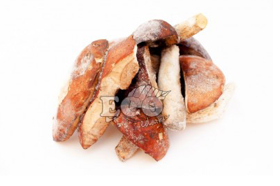
Описание
Время приготовления творожной запеканки с манкой в мультиварке - 1 час 30 минут.
В духовке вы можете приготовить такую же запеканку за 30 минут при температуре 180 градусов.
Пошаговый фото рецепт Творожная запеканка с манкой (в мультиварке)
Подготовить ингредиенты для приготовления творожной
запеканки с манкой в мультиварке.
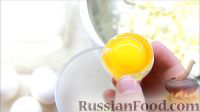
Как приготовить творожную запеканку с манкой в мультиварке:
Белки отделить от желтков.
Взбить желтки миксером или блендером.
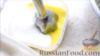
Добавить сахар.
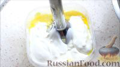
Затем добавить сметану и ванильный сахар и взбить
до однородной массы.
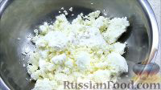
К творогу добавить щепотку соли, манку, разрыхлитель.
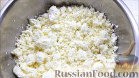
Перемешать вилкой, разбивая комочки творога.
Ввести жидкую смесь в творог.
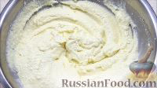
Перебить блендером до состояния мусса. Оставить тесто
на 20 минут, чтобы набухла манка.
Взбить белки добела и ввести ложкой в тесто.
Форму для выпечки смазать сливочным маслом.
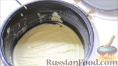
Залить творожное тесто и выпекать в мультиварке, установив
режим "Выпечка" на 60-90 минут.
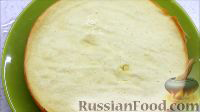
Творожная запеканка с манкой в мультиварке готова.
Подавать творожную запеканку с вареньем, украсив
свежими ягодами.
Всем приятного аппетита!
Посмотреть весь архив рецептов
Похожие рецепты
Нежный и лёгкий грибной
крем-суп
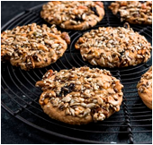
Печенье из сухофру-ктов
(вегетарианское)
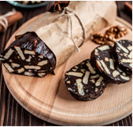
Шоколадная колбаска
Тыква в лимонной
карамели
Комментарии к рецепту
Людмила Вторник,06 Февраля 2021 г. 18:02
Нужно ли открывать клапан?
Елена Пятница, 22 Февраля 2019 г. 14:09
Спасибо! Приготовили. Она была великолепна! Во рту таяла, пропеклась идеально.
Ирина Суббота, 30 Ноября 2019 г. 11:36
Купила мультиварку 3 дня назад и вчера это было первое блюдо, которое на ней
приготовила. Я даже яйца и массу ни миксером ни блендером не взбивала(у меня пока
нет ни того, ни другого). Творог с манкой перетёрла ложкой немного. И ложкой желтки
с сахаром и белки взбила, как могла. Очень вкусно! Правда.И большая получается.
Спасибо за рецепт!
Алина Воскресенье, 17 Мая 2020 г. 08:55
Любимый рецепт запеканки. Готовлю по нему-всем нравится, и мужу, и детям.